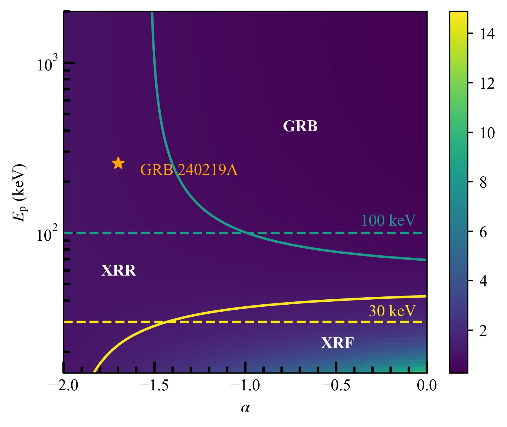

Research Interests



One major aspect of my work focuses on individual EFXTs that may reveal distinct physical origins. I have led detailed analyses of three representative events. EP240219a/GRB 240219A was identified as an untriggered X-ray rich GRB with a peak energy characteristic of classical GRBs, challenging current working definitions of GRB subclassification. EP250404a/GRB 250404A exhibited a well-tracked soft-hard-flat spectral evolution, providing clear evidence for the emergence of the afterglow from the fading prompt emission and a practical criterion for identifying a distinct GRB population among fast X-ray transients. EP250704a/GRB 250704B revealed minutes-long soft X-ray prompt emission from a compact object merger associated with an otherwise ordinary short GRB, making the EFXTs promising electromagnetic counterparts to gravitational wave sources. I have also contributed to the discovery and analysis of several other events, including the AGN-associated Type III EFXT EP241206a, the high-redshift EFXT EP250223a, the SN Ic-BL-associated EFXT EP250304a, and the shock breakout event EP260321a.
Beyond individual events, I aim to characterize the diverse populations of EFXTs, including Type I events associated with compact object mergers, Type II events associated with collapsars, and Type III events associated with supermassive black holes and other origins. In particular, I am carrying out a systematic archival search with EP-WXT for prompt X-ray counterparts to short GRBs detected by other missions since the launch of EP. By identifying common properties among Type I EFXTs and estimating the detection rate of extended X-ray emission, this work can help constrain the remnants of binary neutron star mergers and ultimately the neutron star equation of state. Additionally, I am developing another systematic investigation of early X-ray absorption evolution in EFXTs as a probe of their local environments.
More broadly, I am interested in how the rich diversity of EFXTs arises from differences in progenitor systems, central engines, jet properties, emission geometry, and radiation mechanisms. Looking ahead, the rapidly growing EFXT sample, together with multiwavelength follow-up observations, will provide an opportunity to establish a physically motivated classification framework and diagnose the nature of these high energy transients.
See more: Publications • Talks